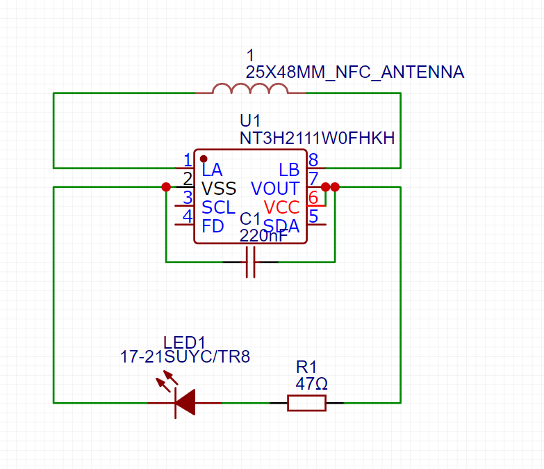
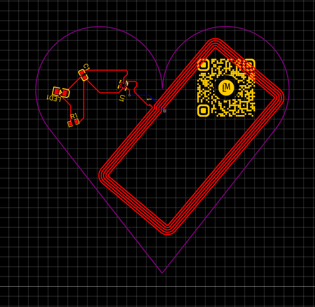
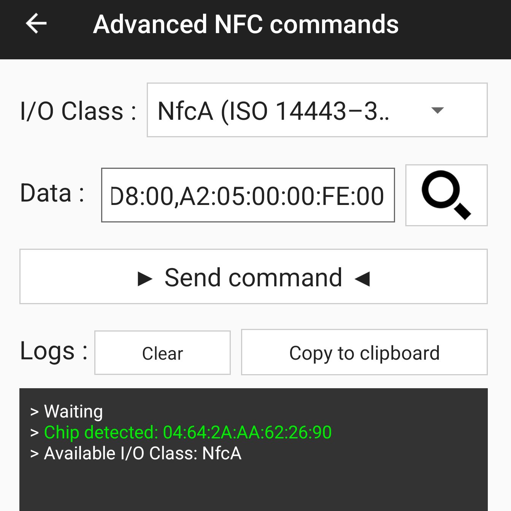
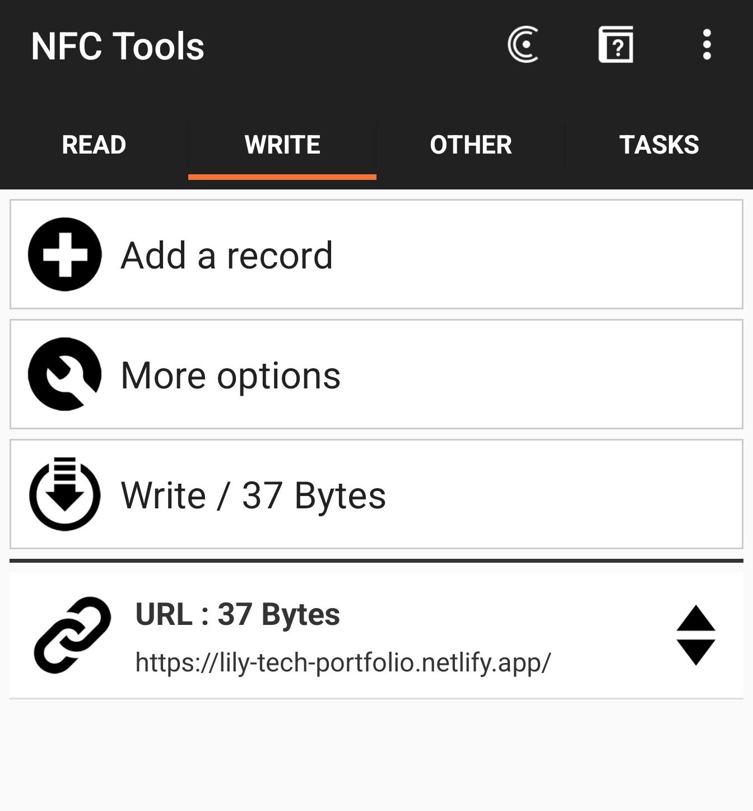
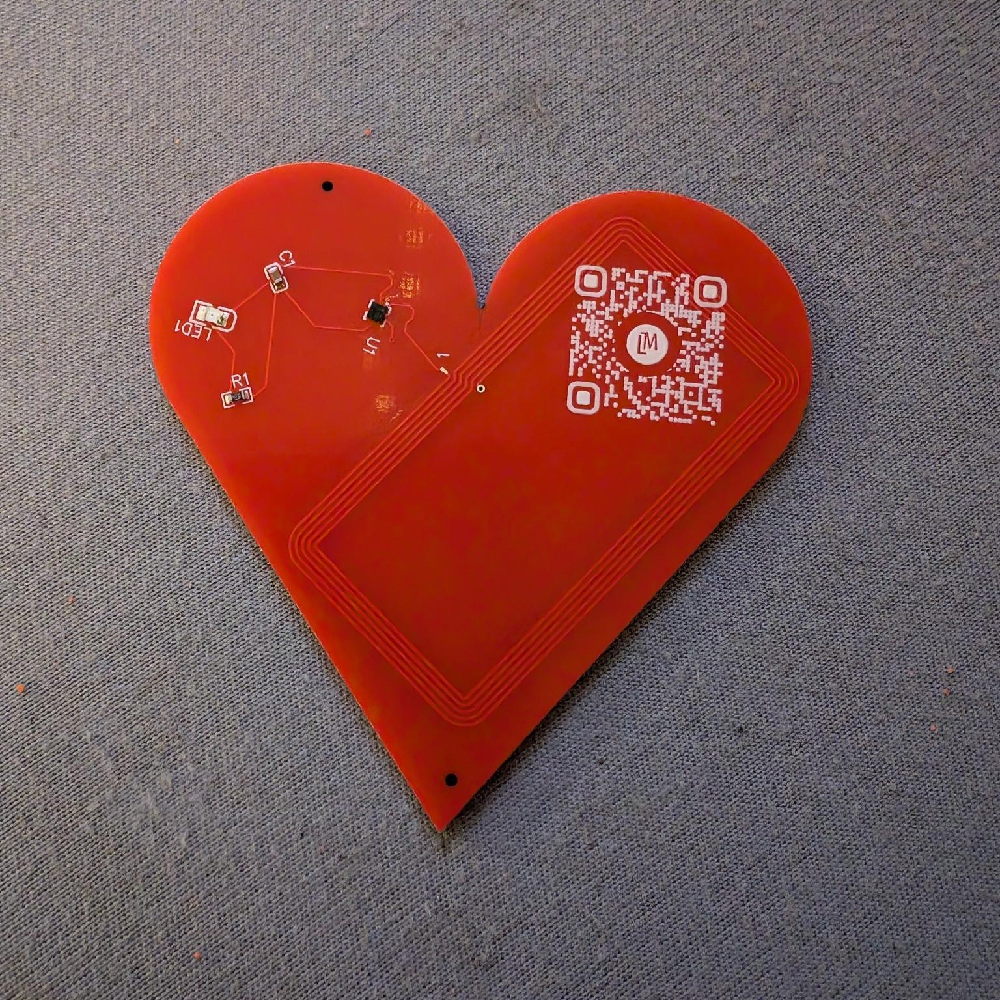

01 — DESIGN
Creating the PCB
I recently discovered electronics through a few women in STEM on TikTok, and I was interested in teaching myself the basics through a project of my own.
I wanted to combine my interest in technology with a creative, personal design, which led to the idea of an NFC hairclip that allows someone to access my portfolio by tapping their phone against it.
I used EasyEDA to design a custom heart-shaped printed circuit board, incorporating the components needed for NFC functionality. The LED helps with testing, as it lights up when the NFC is activated.
I also added a QR code that links to my site, as a backup, in case the NFC doesn't work.
The PCB design was the hardest part, as I quickly realised that the parts would not all fit in the 1.5" design I had planned, meaning I had to adapt. The smallest I could realistically make the board was 6 × 6 cm, which is too large to comfortably fit in my hair. I decided to pivot my idea and turn it into a keychain instead of a hairclip.

I developed the physical PCB layout, arranging the components within the custom heart-shaped design.

02 — DEVELOPMENT
Once the boards were manufactured, I moved on to configuring the NFC components. This meant I had to initialise each chip with the command before writing the URL of my portfolio website to it, which I did using NFC Tools Android.

I then wrote the URL of my portfolio website to the NFC component, allowing someone to access my website when scanning the keychain with a phone.

03 — TESTING
A Working Prototype
I successfully tested all five manufactured PCBs, confirming that each NFC component could link to my portfolio website when scanned using a phone.

04 — NEXT STEPS
Designing the Case
With the PCB design and NFC functionality complete, the remaining stage is to design a physical case to house and protect the electronics, allowing the circuit board to become a finished keychain.